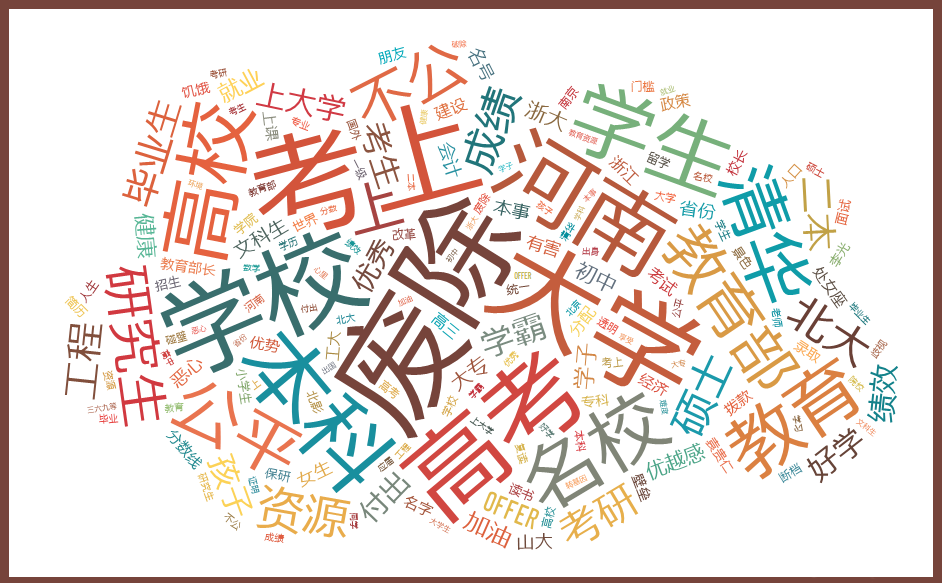

那些年的名校
清末时期，为了抵御外寇凌辱，在仁人志士的推动下，一批大学得以建成。
京师大学堂，北洋大学堂，清华留学预备学校……这些大学就是如今的百年老校，也是很多“985”“211”大学的前身。
这些大学承载了中华民族的共同记忆，它们是先进思想的碰撞汇聚之所，是走出无数精英的知识殿堂，也是历史车轮的推动者。
不久前，中南大学校长张尧学建议取消国内“985”“211”大学，
认为正是由于“985”“211”的名校光环才导致如今大学资源分配不均。
传说中的“985”“211“大学师资力量强大，科研经费充足，学生毕业起薪高，
但也正是在这些大学里，频频爆出学生投毒、科研经费漏洞、高层腐败的丑闻……
顶着“985”“211”盛名的大学，真的值得我们信任吗？
清末时期，为了抵御外寇凌辱，在仁人志士的推动下，一批大学得以建成。
京师大学堂，北洋大学堂，清华留学预备学校……这些大学就是如今的百年老校，也是很多“985”“211”大学的前身。
这些大学承载了中华民族的共同记忆，它们是先进思想的碰撞汇聚之所，是走出无数精英的知识殿堂，也是历史车轮的推动者。
中华人民共和国成立后，1952年，中国摒弃欧美大学模式，采用苏联模式，全国大进行院系大调整。以清华大学、浙江大学为代表的许多大学被调整得面目全非。以南京大学、武汉大学为代表的许多大学被大大削弱。1958年起，部分大学取消讲师、副教授、教授学衔，统称教员。1966年，中央认为毕业生考核制度是旧社会的产物，高等学校毕业生不搞毕业设计，不写毕业论文。总体上，1949年以后的三十年，中国的高等教育受到严重摧残，许多人文学科和社会学科遭到了灭绝。教学常常不能正常进行，科研更是受到极大冲击。
1977年恢复高考后，大学逐步恢复正常教学。1978年改革开放，中国的高等教育获得恢复发展的机遇。此后的十多年里，中国大学的教学和科研都迅速得到相
当的发展。在借鉴发达国家特别是欧美国家高等教育的经验的过程中，大学突破过去三十年的苏式体制，重新回归到1949年以前的欧美大学模式。但大学间的相互效仿加剧大学的雷同，导致整体质量的低下。另一方面，高等教育开始普及，大学扩招，但在教育质量方面所做的工作却远远不够。
1995年，开始了在21世纪重点建设100所大学的“211工程”。1999年前后，又开始了创建若干所具有世界先进水平的一流大学和一批一流学科的“985工程”。清华大学、北京大学、南京大学、复旦大学、上海交通大学、西安交通大学、浙江大学、中国科技大学、哈尔滨工业大学等九所大学首批入选为国家首批建设的重点大学。如今，中国上榜“211”工程的大学共112所，上榜“985”工程的
大学共39所。
2014年11月初，中南大学校长“‘985’、‘211’高校或将取消”的言论在网上传的沸沸扬扬。
2014年11月13日，教育部对网络传闻作出正式回应称，不存在废除“211工程”、“985工程”的情况。
2014年11月13日，江苏省教育厅和南京多所“985”“211”高校相关负责人告诉现代快报记者，“211”三期建设项目在2012年结束后，截至目前，近两年时间未再启动建设。
2014年11月21日，教育部副部长杜玉波表示，今后，更多的国家重大项目将会在支持范围、遴选条件等方面对地方高校一视同仁，破除“985”、“211”等身份壁垒，更加注重绩效评价。
从“985”、“211”大学的发展历史及现状来看，重点大学在各地方分布不均，北京、江苏、上海等地重点高校数目众多；教育资源不平衡，各个大学的受重视程度差异明显。“211”大学数目虽然只有总数的5%，但有相当强的资源优势：教研人员、学术论文、科研经费、国家级奖的比例远超非“211”学校。尤其是科研经费及国家级奖，分别占总数的69%与78%。而专科院校的科研经费只占总数的1%，国家级奖的总数则为0。
1998年5月4日北京大学百年校庆时，教育部领导建议：今后连续3年，政府每年拿出中央财政收入的1%，作为中国建设“世界一流大学”的资金。建议得到了肯定，这是“985工程”的名称由来。以当年财政收入测算，“985工程”总投入将在300亿以上。从一开始，“985”、“211”高校就意味着受国家更多的关注与扶持，同时也承担更大的培养人才的责任。但是，加入“211”“985”工程的大学拥有哪些准入资格呢？“985”、“211”高校又是否真的意味着拥有良好的教育水平呢？“985”“211”是否构筑了新的壁垒呢？
”985“、”211“高校的审批门槛很高，将一批重点大学纳入营中的同时，也将一大批学校拒之门外。
但有一批不在“985“”211“工程名单中的大学，仍然在蓬勃发展。在高考分数、就业情况等硬性指标中也超过了不少”211“大学。
1993年7月，国家教委发出《关于重点建设一批高等学校和重点学科点的若干意见》，决定设置“211工程”重点建设项目。即面向21世纪，重点建设100所左右高等学校和一批重点学科点。后又在“211”工程高校中遴选出39所“985”院校进行大力扶持。
“211”工程设立的目的在于培养高层次人才，提升国家整体高等教育质量。在提高学校整体条件的同时，培养一批国际前沿的学科点，同时提高教育公共服务体系建设与教育资源的共享。
想要审批通过成为“211工程”大学，在学科建设、基础设施建设、科研、师资、研究生规模等方面必须达到相关标准。但在实际审批的过程中却受很多与办学水平无关的因素影响，如经济实力（在211大学中，北京有26所，江苏11所，上海10所，而北京、江苏、上海同样也是中国的经济强省）、学科地位、以及行政思
维中的平衡主义而不按学术标准（每个省都必须有一所211）等。
广东外语外贸大学是广东就业率最高的高校之一，高考录取分数线也在不少”211“高校之上，却不是一所”211“高校。其原校长徐真华曾说过：“我们，从未申报过‘211’，因为我们连竞争的资格都没有。当时，‘211’入围要么是部属高校，要么各省只能推荐一所省属院校，我们既不是部署，也没进入省里，重点培养的视野，先天没有机会。”
“211工程”高校累计至今培养为国家输送了了本科生约242万人、硕士研究生约50万人、博士研究生约12万人、留学生约11万人，为加快培养创新型人才作出了应有贡献。
但是从国家政策扶持上来看，中华人民共和国现有普通高等学校1700多所，“211工程”学校仅占其中的6%，却承担了全国4/5的博士生、2/3的硕士生、1/2的留学生和1/3的本科生的培养任务，拥有85%的国家重点学科和96%的国家重点实验室，占有70%科研经费。
两个工程给高校划出了“三六九等”，也决定了大学的“贫富”——它的背后就是教育经费拨款。从各级政府财政拨款占高校科研经费的比重中就能看出不小的差距。2013年，作为“211”“985”序列的清华大学科研总经费最多，为39.31亿元，财政拨款为27.75亿元，占了70.6%，而非“211”“985”的高校科研经费最多的西南石油大学，4.6亿元中仅有26.1%为财政拨款，约1.2亿元，两者科研经费所获的财政支持相差23倍多。
然而未加入211工程的大学却未必比加入211工程的大学差。在录取分数线上，外交学院、国际关系学院、北京语言大学、中国青年政治学院高于很多985、211高校，在毕业生就业情况上，北京第二外国语学院、外交学院、国际关系学院、天津财经大学、广东外语外贸大学等大学也要比很多211高校好。这些大学并不仅仅依靠财政拨款，而是努力向外界寻求合作发展的机遇。
复旦大学前任校长杨福家曾说：“大学之所以称为大学，关键在于它的文化存在和精神存在。大学的文化是追求真理的文化，是严谨求实的文化，是追求理想和人生抱负的文化，是崇尚学术自由的文化，是提倡理论联系实际的文化，是崇尚道德的文化。”而重点学校，就更应是其中的佼佼者。
然而不少名校却屡屡爆出“丑闻”。2013年4月上海复旦大学上海医学院研究生黄洋遭舍友林森浩投毒致死；中国人民大学招生处长蔡荣生利用自主招生、提前录取等机会收受贿赂，涉嫌金额上亿，2013年11月27日被依法逮捕；2014年11月20日，北大副教授余万里与女留学生有不正当关系，被开除党籍……
大学关键词词云图
 从形形色色的八卦流言，到为人所不齿的贪污受贿，还有为了蒙混过关而剽窃论文……大学，甚至是所谓的名校，竟成了负面消息的发源地。
而通过对新浪微博搜索关键词“211”“985”、统计词频后发现“名
校”、“公平”、“废除”、“资源”等词均属前列，这些高频词说明了大众对“985”“211”资源分配不均衡的质疑。一方面负面新闻四起，一方面大众质疑不断，高校公信力处于下降趋势。
马相伯是1905年创办复旦公学的老校
长，他曾说过：“诸君皆系大学生，然所谓大学者，非校舍之大之谓，非学生年龄之大之谓，亦非教员薪水之大之谓，系道德高尚，学问渊深之谓也。”
只有当真正潜下心来做学问，而非追求蝇营狗苟之利时，大学才能成为知识与灵魂的圣地。
211,985工程是否应该废除？让我们来看看它们怎么说。
“985”“211”工程的初衷是通过行政手段更好的调用资源，投资高校建设，以便有针对性地、高效地提高我国人才培养能力。但随着“985”“211”高校的发展，一系列问题随之而来。
王兆良是山东师范大学前副校长，他曾承认为了竞选211指标，采取过突击方式，马上基建项目，增加学科，从其他学校挖墙脚补充师资。“211”工程是为了促进高校发展而建立，却也由竞选本身引起了恶性竞争。恶性竞争突起不仅因为“211”工程大学有“发展为世界一流大学”的声誉，也因为国家、地方对“211”“985”大学资金上的大力扶持。
对于学校来说，资金是发展的基础。但除却政府的扶持，学校有得天独厚的技术与人才基础，也可以与市场合作发展。获得资金的同时，更能锻炼同学的实践能力。在2010年举办的第四届中外大学校长论坛上，前哈尔滨工业大学校长、现西安交通大学校长王树国曾说：“在校企合作中，大学是受益者。校企合作使得企业对人才需求渗透到大学的人才培养过程中，使学生感受企业文化，学习团队精神，认识复杂社会。哈尔滨工业大学与许多国际国内跨国公司都有合作，这些合作使学生更快成熟，使学校获得更多的科研经费，取得更多的科研成果。因此，希望更多的企业参与到校企合作中来。”
与此同时，政府也在密切关注这几年关于歧视非“985”“211”院校的问题。在2014年省部共建地方高校工作研讨会上，教育部副部长杜玉波说：“将鼓励所有高校积极参与国家重大战略的实施。眼下的‘2011’计划（高等学校创新能力提升计划）就是一个例子。‘2011计划’提出面向各类高校开放，不限定范围，不固化单位；实施后，将不会有‘2011高校’的概念，只有‘2011协同创新中心’的实体。”
教育资源的公平才能保证更多的人接受到良好的教育,非“985”“211”院校的发展需要大力支持与帮助。如果大学分为三六九等，所有人都将对好学校趋之若鹜，一开始发展基础差的学校则少人问津，推广教育就会更困难。很多非“211”“985”院校毕业的学生也会面临更多的就业歧视。
带领清华大学走过第一个黄金时代的老校长梅贻琦曾云：“所谓大学者，非谓有大楼之谓也，有大师之谓也。大学实行通才教育，主张健全人格，由教授治校，有学术自由探讨的风气。”对于大学而言，最重要的不是“211”“985”的名声，而是是否真正沉下心来教书育人。一个大学的公信力并不取决于名气的大小，而是在于大学里的老师是不是能真正传授学生知识，在于学校是否能给学生一个开放自由的环境，在于是否能培养出高质量、推动社会发展的人才。

{kind=link}
{kind=link}
{kind=link}
{kind=link}
{kind=link}